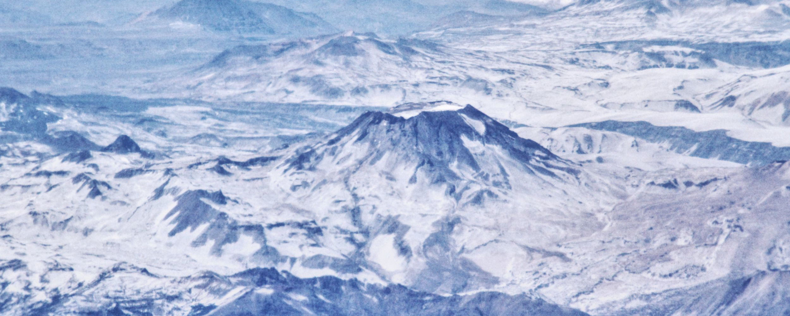

Top 7. Quizapu (1932)

Description
Cerro Azul (Spanish pronunciation: [ˈsero aˈsul], blue hill in Spanish), sometimes referred to as Quizapu, is an active stratovolcano in the Maule Region of central Chile, immediately south of Descabezado Grande. Part of the South Volcanic Zone of the Andes, its summit is 3,788 meters (12,428 ft) above sea level, and is capped by a summit crater that is 500 meters (1,600 ft) wide and opens to the north. Beneath the summit, the volcano features numerous scoria cones and flank vents.
Cerro Azul is responsible for several of South America's largest recorded eruptions, in 1846 and 1932. In 1846, an effusive eruption formed the vent at the site of present-day Quizapu crater on the northern flank of Cerro Azul and sent lava flowing down the sides of the volcano, creating a lava field 8–9 square kilometres (3–3.5 square miles) in area. Phreatic and Strombolian volcanism between 1907 and 1932 excavated this crater. In 1932, one of the largest explosive eruptions of the 20th century occurred at Quizapu Crater and sent 9.5 cubic kilometers (2.3 cu mi) of ash into the atmosphere. The volcano's most recent eruption was in 1967.
The South Volcanic Zone has a long history of eruptions and poses a threat to the surrounding region. Any volcanic hazard—ranging from minor ashfalls to pyroclastic flows—could pose a significant risk to humans and wildlife. Despite its inactivity, Cerro Azul could again produce a major eruption; if this were to happen, relief efforts would probably be quickly organized. Teams such as the Volcano Disaster Assistance Program (VDAP) are prepared to effectively evacuate, assist, and rescue people threatened by volcanic eruptions.
Eruptive History
Cerro Azul has a history of eruptions dating back to at least 1846. The known events include effusive eruptions (lava flows), which created the Quizapu vent, explosive eruptions, and phreatic eruptions. Pyroclastic flows have also been observed as a result of some of these explosive eruptions. The earliest recorded eruption began on November 26, 1846, while the volcano's last eruption began on August 9, 1967. The volcano has produced two of the largest eruptions in South America in recorded history, in 1846 and 1932. Both released 4–5 cubic kilometers (1.0–1.2 cu mi) of the dacitic magma.